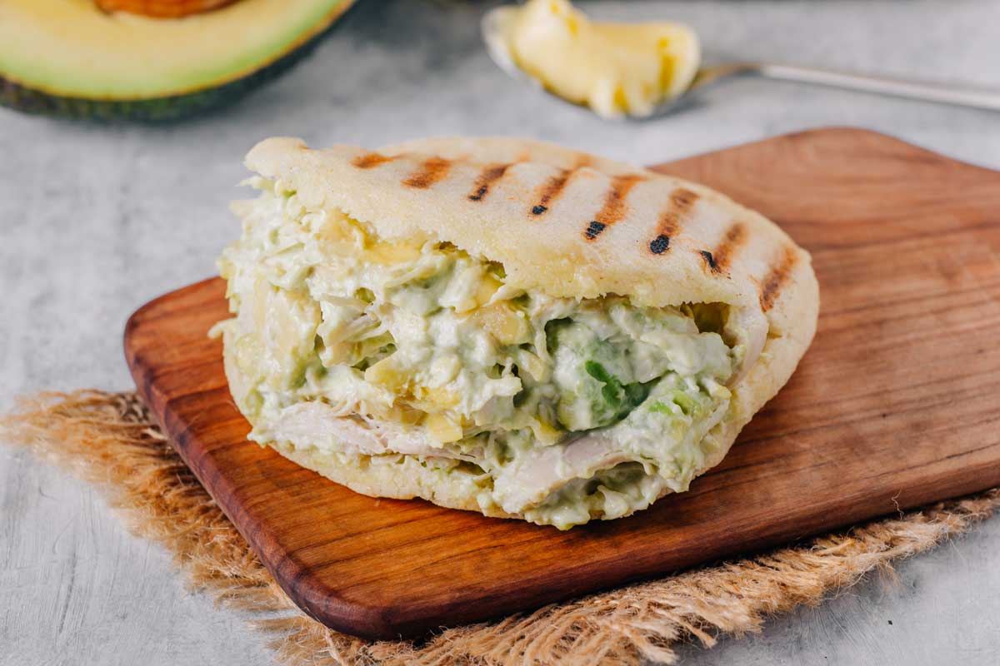
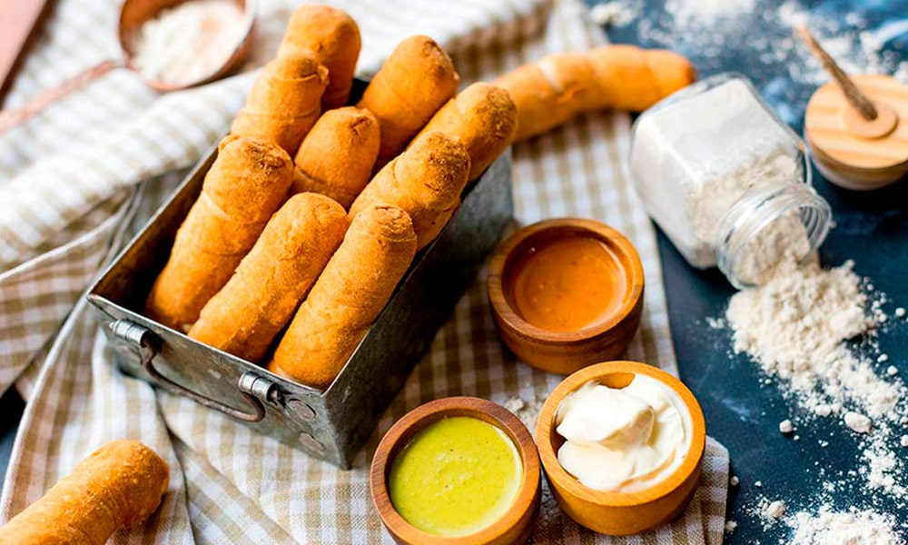
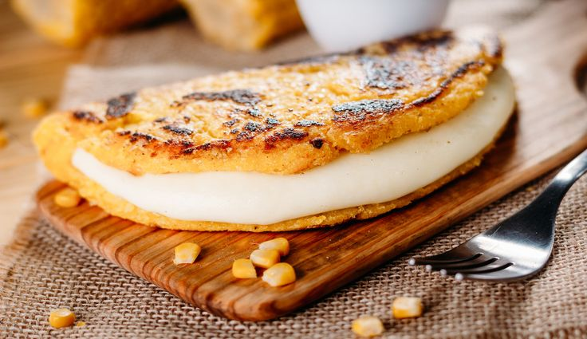

La Arepa: Versatilidad en cada bocado
El plato nacional por excelencia, perfecto para cualquier momento del día. Descubre sus infinitas combinaciones.
Ver RecetaSumérgete en la diversidad de sabores que ofrece la cocina de Venezuela. Aquí te presentamos algunas de nuestras delicias más emblemáticas.

El plato nacional por excelencia, perfecto para cualquier momento del día. Descubre sus infinitas combinaciones.
Ver Receta
La combinación perfecta de carne mechada, arroz, caraotas negras y tajadas. Un festín de sabores.
Ver Receta
Pequeños bocados de queso envueltos en masa, fritos a la perfección. Ideales para compartir.
Próximamente
Tortilla de maíz tierno, dulce y jugosa, acompañada de un cremoso queso de mano. Una delicia campestre.
Próximamente